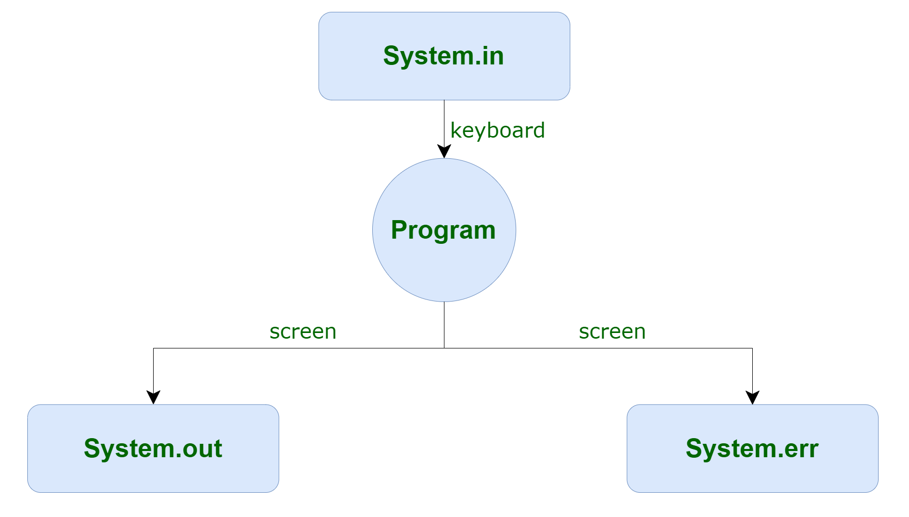

Java Input And Output
In this tutorial, you will learn how to take Input from the user And give Output in Java. Java brings various Streams with its I/O package that helps the user to perform all the input-output operations. These streams support all the types of objects, data-types, characters, files etc to fully execute the I/O operations.

Java Standard Input and Output
System.in
System.in is an InputStream which is typically connected to keyboard input of console programs. System.in is not used as often since data is commonly passed to a command line Java application via command line arguments, or configuration files. This is a separate input mechanism from Java IO.
- Scanner Class
The Scanner class is used to get user input, and it is found in the java.util package.
To use the Scanner class, create an object of the class and use any of the available methods given below.
- Input Types
To read values of different datatypes from the console, look at the table below:
| Method | Description |
|---|
| nextBoolean() | Reads a boolean value from the user |
| nextByte() | Reads a byte value from the user |
| nextDouble() | Reads a double value from the user |
| nextFloat() | Reads a float value from the user |
| nextInt() | Reads a int value from the user |
| nextLine() | Reads a String value from the user |
| nextLong() | Reads a long value from the user |
| nextShort() | Reads a short value from the user |
In the example below, we use different methods to read data of various types:
// Scanning Input from Console
import java.util.Scanner;class MyClass
{
public static void main(String[] args)
{
Scanner myObj = new Scanner(System.in);
System.out.println("Enter name, age and salary:");
String name = myObj.nextLine();
int age = myObj.nextInt();
double salary = myObj.nextDouble();
System.out.println("Name: " + name);
System.out.println("Age: " + age);
System.out.println("Salary: " + salary);
}
}
System.out
System.out is the standard output stream that is used to produce the result of a program on an output device like the computer screen.
Here is a list of the various print functions that we use to output statements:
- print()
This method in Java is used to display a text on the console. This text is passed as the parameter to this method in the form of String. This method prints the text on the console and the cursor remains at the end of the text at the console. The next printing takes place from just here.
Syntax :
System.out.print(parameter);
Example :
import java.io.*;
class Demo_print
{
public static void main(String[] args)
{
// using print()
// all are printed in the
// same line
System.out.print("Keep ");
System.out.print("Using ");
System.out.print("CodeMistic !");
}
}
When you run the program, the output will be:
Keep Using CodeMistic !
- println()
This method in Java is also used to display a text on the console. It prints the text on the console and the cursor moves to the start of the next line at the console. The next printing takes place from the next line.
Syntax :
System.out.println(parameter);
Example :
import java.io.*;
class Demo_print
{
public static void main(String[] args)
{
// using println()
// all are printed in the
// different line
System.out.println("Keep Using CodeMistic!");
System.out.println("Keep Using CodeMistic!");
System.out.println("Keep Using CodeMistic!");
}
}
When you run the program, the output will be:
Keep Using CodeMistic!
Keep Using CodeMistic!
Keep Using CodeMistic!
- printf()
This is the easiest of all methods as this is similar to printf in C. Note that System.out.print() and System.out.println() take a single argument, but printf() may take multiple arguments. This is used to format the output in Java.
Syntax :
System.out.printf(format, arguments);
Example :
import java.io.*;
class JavaFormatter1
{
public static void main(String args[])
{
int x = 100;
System.out.printf("Printing simple"+" integer: x =%d\n",x);
// this will print it upto
// 2 decimal places
System.out.printf("Formatted with precision: PI =%.2f\n",Math.PI);
float n = 5.2f;
// automatically appends zero
// to the rightmost part of decimal
System.out.printf("Formatted to specific width: n= %.4f\n",n);
n = 2324435.3f;
// here number is formatted from
// right margin and occupies a
// width of 20 characters
System.out.printf("Formatted to right margin: n = %20.4f\n",n);
}
}
When you run the program, the output will be:
Printing simple integer: x = 100
Formatted with precison: PI = 3.14
Formatted to specific width: n = 5.2000
Formatted to right margin: n = 2324435.2500
System.err
System.err This is the standard error stream that is used to output all the error data that a program might throw, on a computer screen or any standard output device.
This stream also uses all the 3 above-mentioned functions to output the error data:
- print()
- println()
- printf()
import java.io.*;
public class SimpleIO
{
public static void main(String args[])throws IOException
{
// InputStreamReader class to read input
InputStreamReader inp = null;
// Storing the input in inp
inp = new InputStreamReader(System.in);
System.out.println("Enter characters, "+ " and '0' to quit.");
char c;
do
{
c = (char)inp.read();
System.out.println(c);
} while (c != '0');
}
}
When you run the program, the output will be:
Input
CODEMISTIC0
Output
Enter characters, and '0' to quit.
C
O
D
E
M
I
S
T
I
C
0